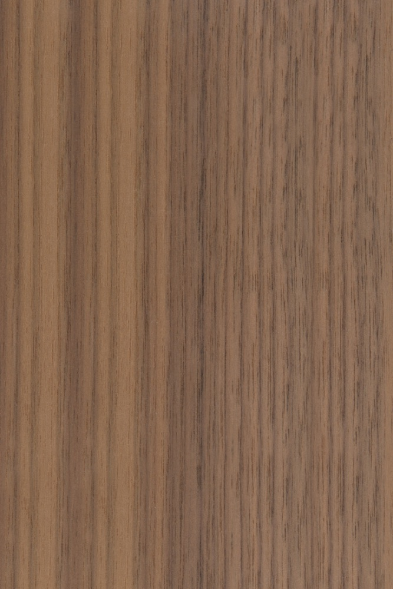
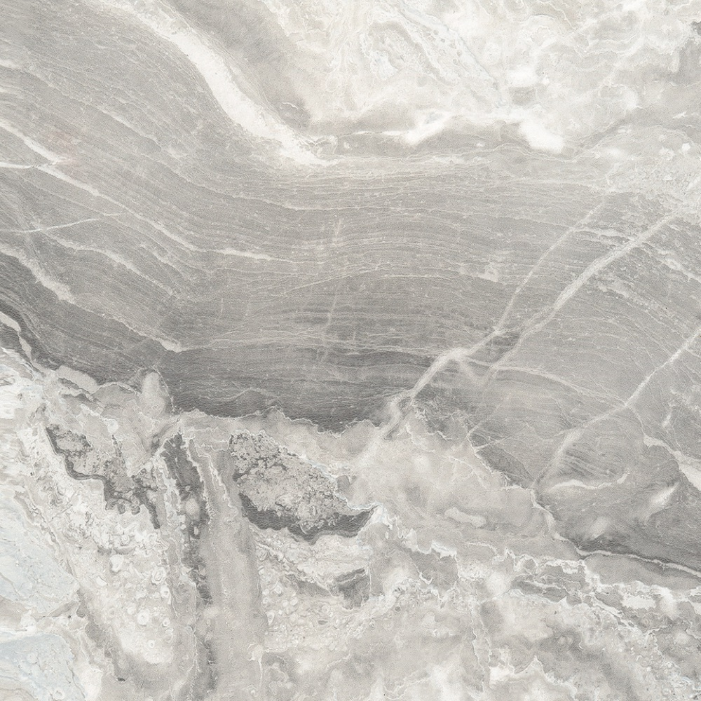

Progettiamo e realizziamo su misura la tua casa, dal 1959.
Dalla falegnameria di famiglia in Brianza agli show-room di Milano e Pavia.
Esperienza & Innovazione
Motta Arredi nasce da una falegnameria nel 1959, nel cuore della Brianza. Con oltre trent'anni di esperienza nel settore, accompagna il cliente non solo nella scelta dell'arredamento ma nella creazione di ambienti e spazi della casa a misura d'uomo.
Menti giovani per progetti all'avanguardia e mani esperte che si fanno carico della loro realizzazione: sono le caratteristiche vincenti dello staff.
Step by step
Studia
Il cliente viene accolto e, attraverso il colloquio, si ascoltano esigenze e richieste. Con la materioteca lo aiutiamo a trovare il proprio gusto.
Progetta
Con software avanzati di progettazione, i designer creano una simulazione 3D del tuo spazio: dal progetto d'insieme alla tinteggiatura delle pareti, all'illuminazione, fino al singolo complemento d'arredo.
Arreda
Motta Arredi si prende cura di installare i mobili in modo professionale e sicuro, con personale interno qualificato, lasciando l'ambiente in perfette condizioni.
Fuori dagli standard
Prodotto custom-made
L'ambiente presenta angoli fuori squadra, sottoscala o spazi ostici che vorresti rendere funzionali e valorizzare? Il "su misura" personalizzato per il cliente è supportato dalla nostra falegnameria, per ottenere la migliore soluzione spaziale e funzionale.
Cucine, ingressi, salotti, divani e arredi bagno realizzabili sartorialmente per il cliente — compreso l'adattamento di mobili esistenti ai nuovi spazi.
«Il lavoro svolto è sempre il risultato di una collaborazione tra le richieste del cliente e il team che lavora sul progetto.»
- 04Collaborazione con il cantiere
- 05Sopralluoghi di check
- 06Montaggio dei mobili
- 07Servizio post-vendita
Servizio chiavi in mano
Dettagli & Qualità
Dimentica le case da catalogo
I materiali che utilizziamo nei nostri arredi sono frutto della ricerca delle migliori proposte esistenti in commercio: dalla ferramenta al legno, fino alla scelta del top, ogni componente rispetta alti standard qualitativi.
Gli ambienti progettati con materiali di pregio migliorano la soddisfazione e il benessere di chi vive la casa, senza dimenticare la durevolezza e la resistenza del prodotto nel tempo.



Dal nostro Instagram
I lavori più recenti, direttamente dal nostro profilo @motta_arredi.


Parliamo del tuo progetto
Vieni a trovarci negli show-room di Milano o Pavia: la prima consulenza è gratuita e senza impegno.
Contattaci